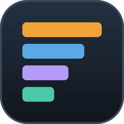

EQSidekick
A free raid tool for EverQuest. It reads the logs you already write and turns them into a meter, spoken alerts, a shared picture of the raid and advice after the fight.
Download for Windows Release notes and other downloadsFree. Updates itself from GitHub. Windows may show a SmartScreen warning the first time you install it.
What it doesn't do. EQSidekick only reads files: your logs, the raid and guild lists you write with
/outputfile, the game's spell list and its settings file. It never reads the game's memory, never sends
anything into the game and never types for you.
Features
Damage and healing meter
Works out each fight by itself, with an overlay you can keep on top of the game.
Triggers
Alerts, timers and spoken alerts. Imports GINA (.gtp) and EQLogParser (.tgf) trigger files, and triggers can be shared with a code typed in chat.
Raid log sharing
Several players' logs are merged into one picture of the raid, live and for the whole night afterwards.
Coaching after a fight
What went wrong and who it happened to, including the mechanics of named raid events.
You decide
Everything is off until you turn it on, and each feature says what it needs and what it costs.
Free
No accounts and no price. New versions install themselves from GitHub.
Triggers
- Alerts, timers and spoken alerts from what appears in your log.
- Import trigger packages from GINA (.gtp) and EQLogParser (.tgf).
- Share a set of triggers with others by a short code typed in chat.
- The triggers window highlights what applies in your current zone and for your class.
Raid log sharing
EverQuest shows each player only part of a raid fight, so any single log misses hits. With log sharing turned on, the logs of everyone in the raid are merged on the raid server: what several players saw counts once, and what only one player saw is kept. You see the result live during the fight and for the whole night afterwards.
Raid sharing runs on raid.mazilla.se.
Privacy
Nothing from your logs leaves your PC until you turn on log sharing. Before it starts, EQSidekick shows exactly what will be shared.
- Always shared when sharing is on: damage, heals, deaths, cures, absorbs, mez breaks, group buffs, pet owners and zoning.
- Shared by default, each can be switched off: casts; loot, loot rolls and /random; raid and group joins and leaves; raid lists; NPC speech; your own fizzles, interrupts and procs.
- Off unless you turn them on and the server asks for them: raid say and public chat (/say, /shout, /ooc, /auction).
- Never shared, and no setting can change it: tells, group chat, guild chat, fellowship chat and chat channels. Lines EQSidekick cannot read are never sent either.
The server can only narrow what you share, never widen it. A merged raid night is visible only to the players who were in that raid. Raw log streams are kept for 7 days and group data for 30 days, and Delete all my history in the app removes everything kept for you. There are no accounts: the app identifies itself with a random key.
The raid server, raid.mazilla.se, is run by Mazilla AB in Sweden. Apart from log sharing, EQSidekick only connects to: GitHub, to check for updates; items.sodeq.org, for the item table, only when you ask for it; Discord, which delivers feedback to us, only when you press Send in the feedback window; and Microsoft Azure for spoken alerts, only if you set up a key for it.